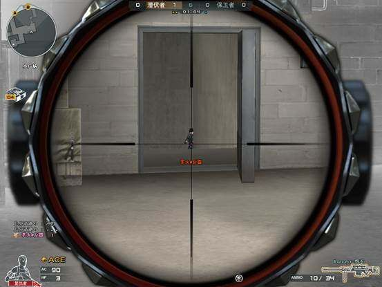

位置1：匪家b门卡点
这是在匪家b门方向的一个小楼梯旁，看弹道的位置，我们就蹲在这个地方，在b仓方向会有一两个敌人，或者在b房里有个狙击，我们可以用身法跳出去勘察一下，如果有人，我们就蹲在这，一枪置敌。
看，我们在这个点位看到敌人了
位置2：匪家大黄箱
在匪家复活点有个大黄箱子，如果b仓的敌人顶前了，而b仓没有队友，我们可以冒险卡一下b门，这里有一个木箱子，我们拿狙击的就蹲在上面，队友帮忙看a小原点跟中路，配合默契，取得胜利。

看，敌人来了，抓紧时机一枪毙命，取得胜利。
位置3:匪家左手木箱防止敌人前顶
中路有可能会有敌人前顶，我们可以利用匪家门前左手边的木箱子来对付敌人
我们可以看到漏衣服角了，看她上楼梯就开枪。
位置4:A小道原点
最后一个卡点位置就是小道原点了，看清楚弹道位置。可以站在这个位置穿a小房的敌人。